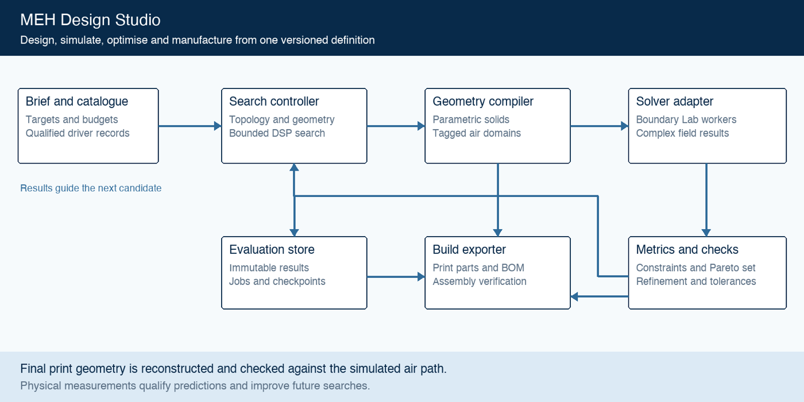
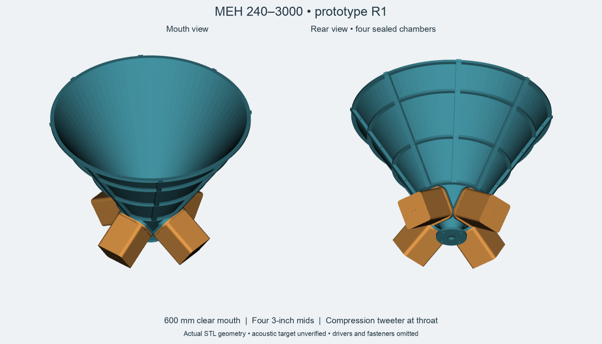
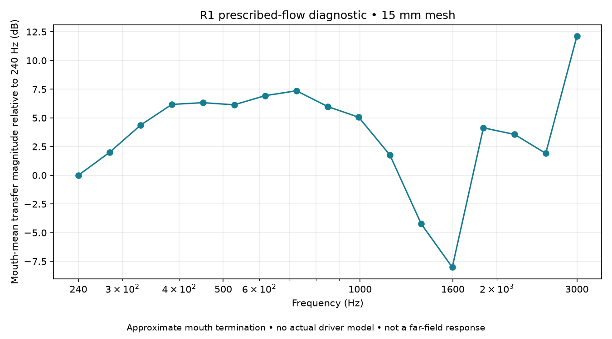
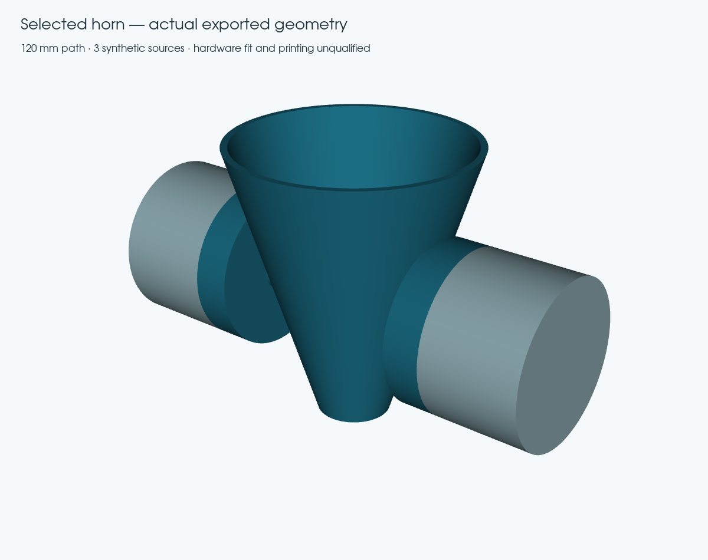
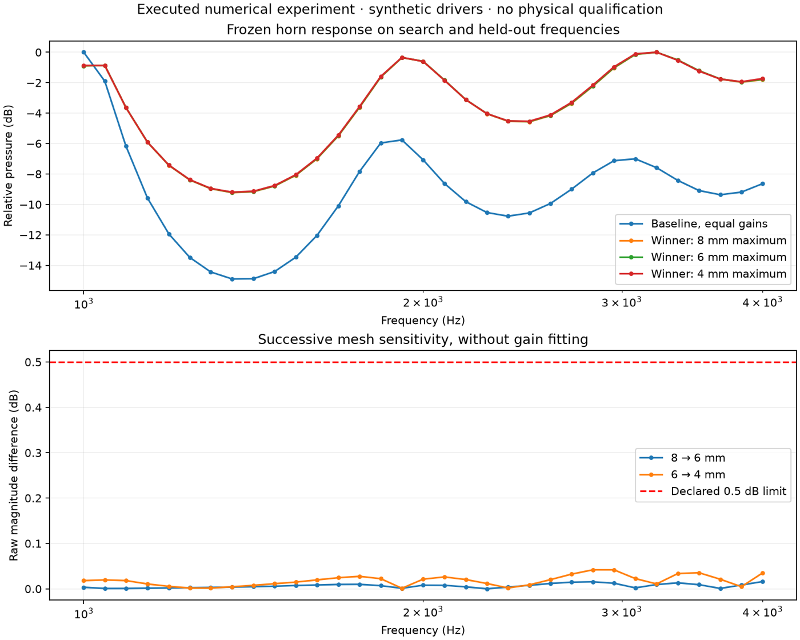
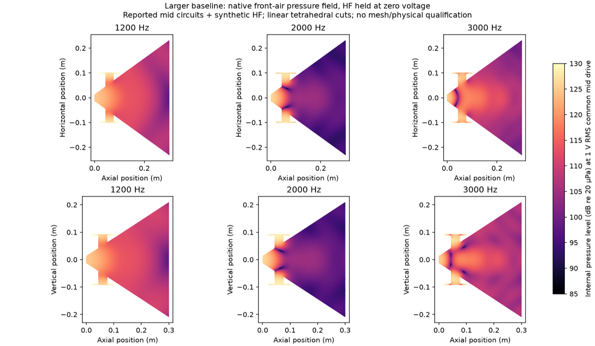
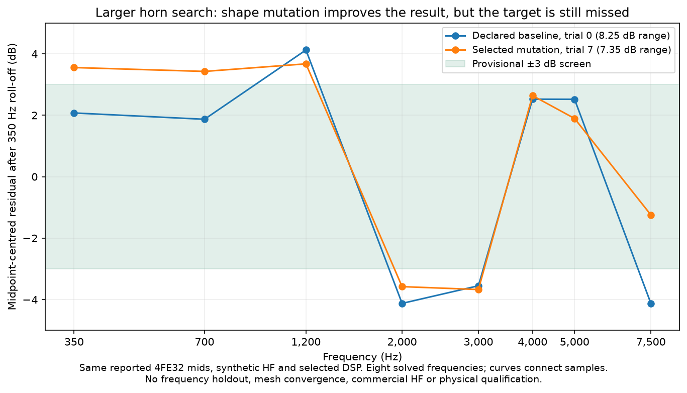
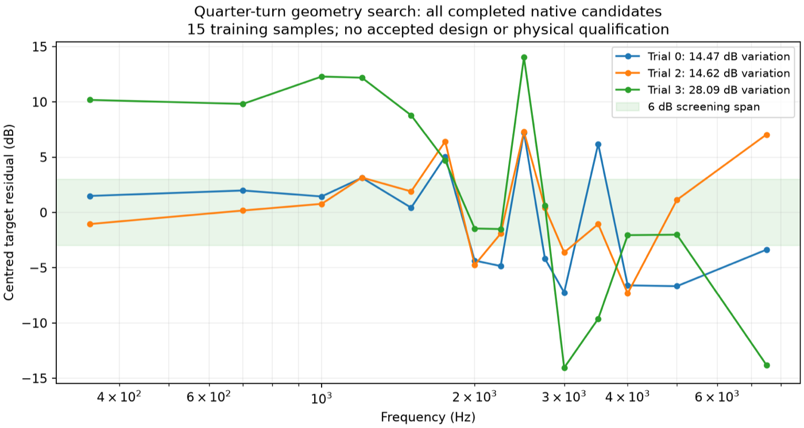
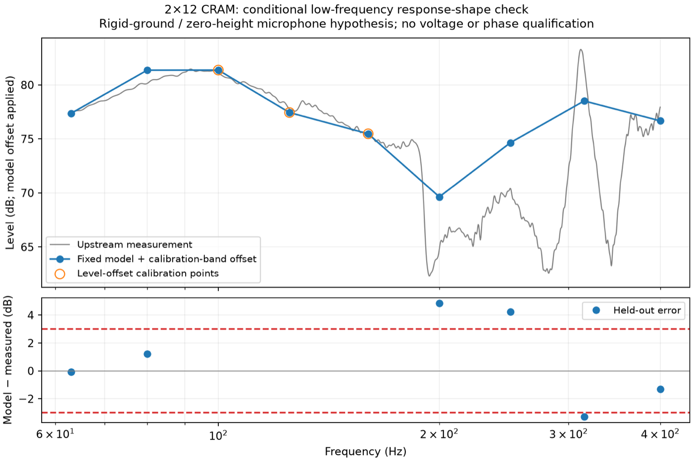

What it does
A multiple entry horn (MEH) feeds one horn from several drivers. A compression driver sits at the throat. A ring of small midrange drivers enters through ports in the horn wall further out. If the ports are close enough together, the drivers sum into one source.
Port position, port size, the cavities around each driver and the crossover all interact, so a MEH is hard to design by hand. MEH Design Studio searches that space with simulation. It starts from a design brief, a driver catalogue and a budget. One parametric model generates both the air domain that is simulated and the solids that are printed. The search varies drivers, entry positions and horn shape, scores each candidate with a coupled FEM/BEM solve through Boundary Lab, and exports the winner as STEP, STL and 3MF.
The project is validation first. Every experiment, including the failures, is kept in the repository with its raw evidence and the limits it was judged against.

How to use it
It needs Python 3.11 or newer. The foundation tools install and run without the solver:
git clone https://github.com/timini/meh-design-studio.git
cd meh-design-studio
python -m venv .venv && . .venv/bin/activate
python -m pip install -e ".[dev]"
meh validate-brief examples/reference-brief.json
meh cavity-reference --lengths-m 0.47 0.33 0.22 --max-hz 1000
python -m pytestHorn CAD needs the cad extra. A full search also needs a separate Boundary Lab checkout and Julia. A search takes a brief and a starting geometry:
python validation/fixtures/create_synthetic_catalogue.py drivers.sqlite
meh optimise examples/synthetic-dense-search-brief.json \
--geometry examples/three-driver-geometry.json --database drivers.sqlite \
--checkout /path/to/boundary-lab --python /path/to/blab-env/bin/python \
--julia /path/to/julia --output runs/searchOther commands continue a stopped search (meh resume-optimise), package a finished search with its geometry and driver BOM (meh export-search), and compare replacement drivers on a fixed geometry (meh reanalyse-circuits). The search guide has the details.
Prototype R1: 240 to 3000 Hz
R1 is the first printable design. Four 3 inch FaitalPRO 3FE25 mids sit around a Celestion CDX1-1445 compression driver. Each mid has its own sealed rear chamber. The horn splits into a core, three bands of eight sectors and four rear covers.

Every print part passed the geometry checks: single valid solids, closed and oriented meshes, and reconstruction volume error below 1 ppm. These checks do not establish print strength, airtightness or acoustic accuracy.
First simulations of R1
A simplified FEM diagnostic drove the four mid ports with equal prescribed flow and a plane-wave load at the mouth. Across 17 frequencies the mouth transfer spans 20.14 dB, with a dip near 1595.5 Hz. This is an internal diagnostic, not a speaker response.

The mesh refinement check failed at 3 kHz. Going from 15 mm to 10 mm changed the complex transfer by 24.10%, and 10 mm to 7.5 mm changed it by 10.208%, against a 10% limit. The mid-band samples passed. The limit was not relaxed. A later coupled FEM/BEM solve on the actual R1 mesh completed at 240 Hz with an interior residual of 1.96e-14. That shows the mesh connects to exterior radiation; it does not qualify the band.
End-to-end test horn
The first full run of the pipeline used a small test horn with three synthetic drivers. It covered catalogue loading, search, CAD, meshing, coupled FEM/BEM, frozen-finalist validation and export. All 68 validation solves completed.


| Check | Result |
|---|---|
| Search | 4 candidates, 17 frequencies, 1 to 4 kHz |
| Baseline ripple | 14.883 dB |
| Selected horn | 120 mm path, 100 mm mouth |
| Selected ripple | 9.016 dB |
| Improvement at held-out frequencies | 3.771 dB (required 1 dB) |
| Frozen validation | 33 frequencies, 3 mesh sizes |
| Mesh stability | Pass: 0.042 dB, 0.70° (limits 0.5 dB, 5°) |
| Physical or print qualification | Not performed |
The drivers and prices in this run are synthetic. It shows that the pipeline works; it does not show a hi-fi or efficient speaker.
Searches with catalogue drivers
Larger 350 Hz horn
An eight-proposal evolutionary search used four FaitalPRO 4FE32 mids and a synthetic throat source. Three proposals completed all eight coupled frequencies. Five failed in geometry or interface compilation and are kept as failures.

The selected mutation cut the response range from 8.2486 dB to 7.3464 dB and the coverage error from 6.7434 dB to 6.4123 dB. It still misses the provisional ±3 dB screen. Its minimum parallel-bank impedance is 3.1377 Ω and its frozen build estimate is £261.30.

Quarter-turn vocal-band search
A search over noncircular profiles with quarter-turn symmetry evaluated three candidates at 15 frequencies from 350 to 7500 Hz. None met the 6 dB response screen. Response variation was 14.468 dB for the baseline, 14.623 dB for the best combined candidate and 28.085 dB for a random exploration.

Checking the solver against a measurement
The solver itself was also compared with a real measurement: the 2x12 CRAM example supplied with Boundary Lab. With a ground-plane model the maximum held-out error is 4.848 dB and the RMS error is 3.042 dB. Three of six held-out samples fail the ±3 dB limit, so the comparison fails. Without ground loading the maximum error was 5.193 dB.

What comes next
Catalogue datasheets do not say how a cheap cone behaves at 3 kHz behind a small port in a horn wall. Only measurement can answer that. The next step is to print R1, measure each driver and the combined horn with a calibrated microphone, and compare the results with a coupled model of the actual geometry before tuning anything.
The implementation status, validation strategy and R1 build notes have the full detail.